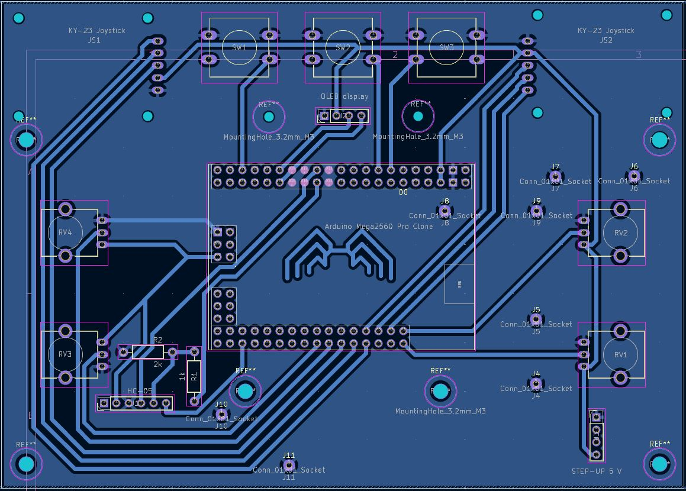

5. týden: Výroba elektroniky
Během pátého týdne bylo úkolem vytvořit elektronický obvod, který bude provádět nějakou akci (alespoň blikat).
Podmínkou bylo, že se pro propojení součástek nesmí použít nepájivé kontaktní pole.
Dálkové ovládání hexapoda
Tento týden jsem se rozhodl sestrojit dálkové ovládání k mému závěrečnému projektu - hexapodovi. Cílem bylo navrhnout kontroler, který mi poskytne kontrolu nad všemi pohyby robota. Ovladač by měl umožňovat následující:
- pohyb ve všech směrech,
- otáčení těla,
- frekvenci chůze,
- výšku kroku,
- přepínání mezi různými vzory chůze (gaity),
- náklony těla (roll, pitch a yaw),
- posuny těla doleva, doprava, nahoru a dolů (bez odlepení nohou od země),
- postavení a posazení robota,
- vypnutí robota.
Mozkem ovladače bude Arduino Mega 2560 PRO. Ke komunikaci s Raspberry Pi 5, které se nachází v hexapodovi, použiji Bluetooth modul. Nastavené hodnoty se budou zobrazovat na OLED displeji. Zařízení je napájeno třemi AA bateriemi, jejichž napětí zvyšuji na 5 V pomocí step-up modulu. Celý tento projekt jsem se rozhodl integrovat na vlastní DPS (desku plošných spojů).
Návrh DPS v programu KiCAD
Desku jsem navrhoval v bezplatném programu KiCAD. Prvním krokem byla tvorba schématu, kde se definují vývody použitých součástek a jejich propojení. Mnohé součástky má KiCAD v základu (tlačítka, rezistory, potenciometry), pro jiné je nutné schéma vytvořit nebo stáhnout. Schéma Arduina jsem stáhl z tohoto GitHub repozitáře.
Pro zjednodušení jsem schémata složitějších modulů (joystick, Bluetooth, měnič napětí) nahradil standardními
kolíkovými lištami (např. Conn_01x05_Socket pro joystick).
Spoje k Arduinu jsem volil tak, aby byly vývody fyzicky blízko u sebe, což mi později velmi usnadnilo trasování desky.
Jelikož logika Bluetooth modulu funguje na 3,3 V,
bylo navíc nutné napětí z Arduina snížit pomocí napěťového děliče.

Druhým krokem byl samotný návrh fyzické desky (v Editoru DPS). Zde je nutné každému symbolu přiřadit pouzdro (footprint), které definuje rozměry součástky, rozteče vývodů a montážní otvory, a následně mezi jednotlivými piny nakreslit vodivé spoje. Pouzdro joysticku jsem tvořil manuálně podle technického nákresu. Pouzdro Arduina se nacházelo ve stejném GitHub repozitáři jako jeho schéma a pouzdra kolíkových lišt, tlačítek, potenciometrů a rezistorů již KiCAD obsahuje.

Zvolil jsem šířku spojů 0,8 mm a izolační mezeru 0,5 mm. Protože jsem vyráběl pouze jednovrstvou DPS (kde se cesty nesmí křížit), byl proces poměrně složitý. Abych si ušetřil trasování zemnících spojů, využil jsem funkci rozlité mědi (rozlitá zem). Zbytkové "ostrovy" země, které se s hlavní plochou nespojily, jsem vyřešil pomocí jumperů (propojení drátkem), které jsem připájel z vrchní strany desky. Jelikož měď rychle odvádí teplo, použil jsem pro usnadnění pájení spojů připojených k zemi termální odlehčení s krčky o šířce 0,65 mm s mezerou 0,65 mm.


Výroba DPS na CNC frézce
Z KiCADu jsem vyexportoval výrobní data (.gbr pro cesty a ořez, .drl pro vrty). Příprava frézování (rychlost, hloubka...) a nastavení nástrojů probíhaly v softwaru MakeraCAM. Protože se frézuje spodní strana desky, musela být data zrcadlově převrácena. Za obrovskou pomoc a předání zkušeností v této fázi projektu bych rád poděkoval panu Ing. Krištofu Pučejdlovi.

K výrobě posloužila školní CNC frézka Carvera Air. Desku kuprextitu (15 × 10 cm) jsme k podložce zafixovali oboustrannou lepicí páskou.


Výroba probíhala ve čtyřech krocích: vyvrtání malých otvorů a předvrtání těch větších, vyfrézování měděných spojů, rozšíření otvorů větším vrtákem a na závěr vyříznutí vnějšího obrysu desky.


Osazování součástkami a pájení
Seznam použitých součástek:
- Arduino Mega 2560 PRO (ATmega2560)
- I2C OLED displej 1,3" (bílý, 128 × 64 px)
- 2× KY-023 Joystick s tlačítkem
- 3× Tlačítko TC-1212T (12 × 12 × 7.3 mm)
- 4× Vertikální potenciometr RV09 10k
- Bluetooth modul HC-05
- Step-up DC-DC měnič (z 1-5 V na 5 V, 500 mA)
- Držák na 3× AA baterie + baterie samotné
- Kolébkový přepínač (10 A AC)
- Sada malých M2 šroubků (délka 4 až 20 mm)
- Dutinkové a kolíkové lišty

Pro pájení jsem použil 16 let starou sadu ROTHENBERGER od dědy. Nástroj s velkým hrotem a hrubou pájkou (1,5 mm) nebyl na drobnou elektroniku vůbec vhodný. Největší a téměř fatální chybou však bylo použití tavidla z této sady. Bylo to totiž instalatérské tavidlo, které je elektricky vodivé.

Součástky (tlačítka, rezistory, potenciometry) jsem pájel přímo do desky. Moduly a displej se zasouvají do předem připájených dutinkových lišt, takže je lze kdykoliv vyjmout. Joysticky jsou drženy nad deskou pomocí 4 mm vysokých spacerů tištěných na 3D tiskárně, které se následně prošroubují M2 × 8mm šroubky a na druhé straně desky upevní maticí. Stejným způsobem je displej držen ve výšce 16 mm pomocí šroubků M2 × 20mm. Pro upevnění držáku baterek jsem v DPS navrhl dva otvory pro přišroubování, nakonec jsem ale použil tavné lepidlo.


Během manipulace s deskou před přišroubováním joysticků se mi bohužel podařilo jeden joystick odtrhnout i s měděnými cestami. Spoje jsem musel nahradit drátky.


Problémy s tavidlem
Po prvním zapojení se Arduino chovalo naprosto nevyzpytatelně. Napětí na analogových vstupech kolísalo mezi 1 až 3 volty, když mělo být 5. Postupně zhasínaly různé moduly, až přestaly svítit i indikační LED přímo na Arduinu. Po hodinách zoufalého debugování jsem zjistil příčinu: vodivé zbytky tavidla tvořily zkraty a parazitní napěťové děliče.
Následoval drastický pokus o záchranu projektu. Celou desku i s připájenými součástkami jsem polil 99% isopropylalkoholem a vydrhnul kartáčkem. Arduino si navíc prošlo půlhodinovou koupelí v horké vodě s Jarem. Po důkladném vysušení fénem obvod zázračně ožil a plně funguje (až na tlačítko v pravém joysticku, kde se při čištění utrhl opravný drátek).
CAD návrh
Krabičku jsem modeloval ve Fusion 360 s ohledem na příjemné držení v rukou a co nejmenší rozměry. DPS má v rozích otvory o průměru 2 mm, díky čemuž ji lze v krabičce uchytit pomocí čtyř M2 × 6 mm šroubků. Zespodu krabičky je otvor o rozměrech 20 × 12,5 mm, do kterého je zatlačen kolébkový spínač. Víko bylo nutné ladit na několik pokusů, aby všechny otvory perfektně lícovaly s ovládacími prvky. Abych viděl na LED měniče napětí a Bluetooth modulu, udělal jsem na obou stranách krytu otvory. Prázdné místo na krytu jsem vyplnil logem ČVUT, které jsem pomocí funkce Canvas vložil do roviny krytu a obkreslil pomocí Fit Point Spline. Víko je ke krabičce připevněno pomocí čtyř M2 × 8 mm šroubků.


Jelikož se tlačítka a potenciometry nacházejí pod úrovní víka, bylo nutné vymodelovat nástavce. Knoflíky pro tlačítka jsem stáhl z GrabCAD a následně jsem je ve Fusion 360 prodloužil na 16 mm. Nástavec na potenciometry jsem tvořil sám. Do potenciometru zapadne díky kruhovému otvoru o průměru 6,1 mm, ve kterém je příčka o tloušťce 0,9 mm.


3D tisk
Hotové modely jsem vyexportoval z Fusionu (Utilities -> 3D print) do formátu 3MF a naslicoval v programu Bambu Studio. Jako materiál jsem vybral PLA a tiskl jsem na tiskárně Bambu Lab A1 Mini s 0,4 mm tryskou při následujícím nastavení:
- Profil: 0,20 mm Standard @BBL A1M
- Nozzle temperature (teplota trysky): 210 °C
- Bed temperature (teplota podložky): 65 °C
- Wall loops (perimetry): 2
- Sparse infill density (hustota výplně): 15 %
- Sparse infill pattern (vzor výplně): Gyroid
- Outer wall speed (rychlost vnější stěny): 60 mm/s
Zbylá nastavení jsem ponechal na výchozích hodnotách vybraného tiskového profilu.
Pro otvor kolébkového spínače bylo potřeba vygenerovat podpěry. Zvolil jsem následující nastavení podpěr:
- Type (typ): Tree (auto)
- Top Z distance (mezera v ose Z): 0,25 mm
Ostatní nastavení podpěr zůstalo výchozí.


Programování (Arduino IDE)
Kód se stará o vizualizaci vstupů na OLED displeji, k čemuž používá knihovnu U8g2. Pohyb joysticků je znázorněn kruhy, které se při stisku vyplní. Stav tlačítek je v horní části a potenciometry jsou zobrazeny jako čtyři sloupcové grafy uprostřed.
#include <U8g2lib.h> // knihovna pro oled
#include <Wire.h> // sbernice i2c
// objekt displeje
U8G2_SH1106_128X64_NONAME_F_HW_I2C u8g2(U8G2_R0, /* reset=*/ U8X8_PIN_NONE);
// piny tlacitek
const int pinSW1 = 27;
const int pinSW2 = 5;
const int pinSW3 = 3;
// piny potenciometru
const int pinRV1 = A0;
const int pinRV2 = A1;
const int pinRV3 = A14;
const int pinRV4 = A12;
// levy joystick
const int joy1X = A10;
const int joy1Y = A8;
const int joy1Btn = A6;
// pravy joystick
const int joy2X = A7;
const int joy2Y = A5;
const int joy2Btn = A3;
void setup() {
delay(50); // kratka pauza
// pullup odpory pro tlacitka
pinMode(pinSW1, INPUT_PULLUP);
pinMode(pinSW2, INPUT_PULLUP);
pinMode(pinSW3, INPUT_PULLUP);
pinMode(joy1Btn, INPUT_PULLUP);
pinMode(joy2Btn, INPUT_PULLUP);
u8g2.setBusClock(400000); // rychle i2c
u8g2.begin(); // start displeje
}
void loop() {
// cteni potenciometru
unsigned int valRV1 = analogRead(pinRV1);
unsigned int valRV2 = analogRead(pinRV2); // normalni smer
unsigned int valRV3 = 1023 - analogRead(pinRV3); // obracena hodnota
unsigned int valRV4 = analogRead(pinRV4);
// cteni stisku tlacitek
bool btn1 = !digitalRead(pinSW1);
bool btn2 = !digitalRead(pinSW2);
bool btn3 = !digitalRead(pinSW3);
bool j1Btn = !digitalRead(joy1Btn);
bool j2Btn = !digitalRead(joy2Btn);
// osy joy 1 inverzni
long dX1 = 512 - analogRead(joy1X);
long dY1 = 512 - analogRead(joy1Y);
long distSq1 = dX1 * dX1 + dY1 * dY1; // ctverec vzdalenosti
if (distSq1 > 262144L) { // orez do kruhu
long dist1 = sqrt(distSq1);
dX1 = (dX1 * 512) / dist1;
dY1 = (dY1 * 512) / dist1;
}
// pozice joy 1 v pixelech
int drawJ1X = 20 + (dX1 / 32);
int drawJ1Y = 32 + (dY1 / 32);
// osy joy 2 normalni
long dX2 = analogRead(joy2X) - 512;
long dY2 = analogRead(joy2Y) - 512;
long distSq2 = dX2 * dX2 + dY2 * dY2; // ctverec vzdalenosti
if (distSq2 > 262144L) { // orez do kruhu
long dist2 = sqrt(distSq2);
dX2 = (dX2 * 512) / dist2;
dY2 = (dY2 * 512) / dist2;
}
// pozice joy 2 v pixelech
int drawJ2X = 106 + (dX2 / 32);
int drawJ2Y = 32 + (dY2 / 32);
u8g2.clearBuffer(); // vymaz pameti displeje
// obrysy obou joysticku
u8g2.drawCircle(20, 32, 20);
u8g2.drawCircle(106, 32, 20);
// tecka leveho joysticku plna pri stisku
if (j1Btn) u8g2.drawDisc(drawJ1X, drawJ1Y, 4);
else u8g2.drawCircle(drawJ1X, drawJ1Y, 4);
// tecka praveho joysticku plna pri stisku
if (j2Btn) u8g2.drawDisc(drawJ2X, drawJ2Y, 4);
else u8g2.drawCircle(drawJ2X, drawJ2Y, 4);
// ramecky pro grafy
u8g2.drawFrame(46, 27, 6, 36);
u8g2.drawFrame(56, 27, 6, 36);
u8g2.drawFrame(66, 27, 6, 36);
u8g2.drawFrame(76, 27, 6, 36);
// prevod hodnot na pixely
int h1 = (valRV1 * 36) >> 10;
int h2 = (valRV2 * 36) >> 10;
int h3 = (valRV3 * 36) >> 10;
int h4 = (valRV4 * 36) >> 10;
// sloupce grafu zleva doprava
u8g2.drawBox(46, 63 - h4, 6, h4); // sloupec rv4
u8g2.drawBox(56, 63 - h3, 6, h3); // sloupec rv3
u8g2.drawBox(66, 63 - h1, 6, h1); // sloupec rv1
u8g2.drawBox(76, 63 - h2, 6, h2); // sloupec rv2
// vykresleni hornich tlacitek
if (btn1) u8g2.drawDisc(51, 8, 4); else u8g2.drawCircle(51, 8, 4);
if (btn2) u8g2.drawDisc(64, 8, 4); else u8g2.drawCircle(64, 8, 4);
if (btn3) u8g2.drawDisc(77, 8, 4); else u8g2.drawCircle(77, 8, 4);
u8g2.sendBuffer(); // zapis na displej
}
A nakonec fotka hotového dálkového ovládání pro hexapoda: